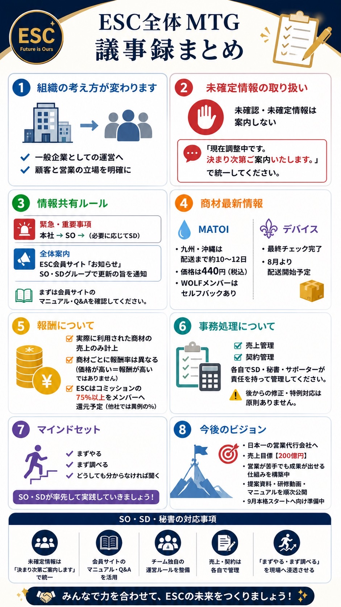

ESC全体MTG
議事録まとめ
甲斐秘書代表がまとめてくださった議事録です。すべて千葉さんからのメッセージです。注意事項も含まれていますので、必ずご確認ください。

特に守ること
未確定情報は案内しない
- 未確認・未確定情報は、メンバーへ案内しないでください。
- 「現在調整中です。決まり次第ご案内いたします。」で統一してください。
- まず会員サイトのマニュアル・Q&Aを確認してください。
今回の8つの要点
1. 組織の考え方
一般企業としての運営へ。顧客と営業の立場を明確にします。
2. 未確定情報
確認前の情報は案内せず、決定後に統一して案内します。
3. 情報共有
緊急事項と全体案内のルートを守ります。
4. 商材情報
MATOI・美容デバイスの最新情報が共有されています。
5. 報酬
実際に利用された商材の売上のみ計上されます。
6. 事務処理
売上・契約管理は各自が責任を持って管理します。
7. マインド
まずやる、まず調べる、どうしても分からなければ聞く。
8. 今後のビジョン
9月の本格スタートへ向けて準備を進めます。